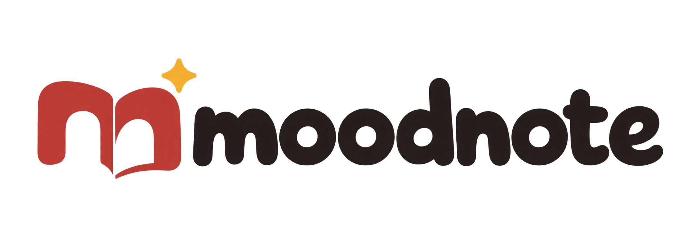

THE STORY OF MOODNOTE

오늘의 기분을 한 장씩.
어떤 날은 체리 스티커가 좋고, 어떤 날은 빈 노트에 한 줄만 쓰고 싶죠. 무드노트는 그런 작은 취향이 모이는 곳이에요. mood는 오늘의 기분, note는 그 기분을 남겨두는 한 장. 다이어리뿐 아니라 펜, 스티커, 손으로 만드는 소품까지, 내 하루에 어울리는 것을 골라 오래 간직한다는 뜻을 담았습니다.
노트의 두 페이지를 이름의 첫 글자 m으로 연결했어요. 마음대로 쓰고 붙일 수 있는 열린 페이지를 뜻합니다.
페이지 위 작은 별은 “이거 좋다!” 하고 발견한 순간이에요. 사소한 하루에도 반짝이는 취향 하나쯤 있으니까요.
도톰한 소문자와 부드러운 곡선으로 문구를 고르는 즐거움을 표현했어요. 장난스러운 느낌을 담되 작은 화면에서도 또렷하게 읽힙니다.
체리 레드 · 취향의 포인트잉크 브라운 · 기록머스터드 · 발견의 반짝임